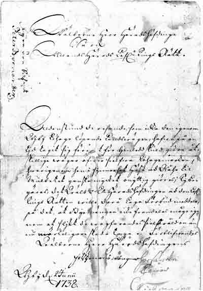
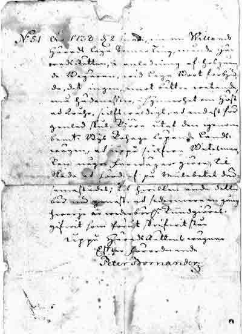

|
VIBY i gamla tider |
|
| De äldsta handlingarna i
Viby bys byakista är från 1736 och gäller en anmälan till tingsrätten om
resandes intrång i deras kohagar
 och häradsrättens utslag i ärendet.  |
Wälborne Herr Häradshöfdinge Så ock Willands Härads Lofl.e Tings Rätt Alldenstund de resande som åka den igenom Wiby Kohage löpande Landsvägen hafva på en tid tagit sig före at för Genledds Skuld giöra åtshillige wägar öfver sielfva Kohagemarken, hvarigenom hon i synnerhet Höst ock Wåhr til mulbetet ganska mycket onyttig giöres, Ty begäres det Hwälb. Hr Häradshöfdingen at den Lofl. Tings Rätten wille därå Laga Förbud meddela, på det at Byamännen icke framdeles måge igenom et slikt de wägfarandes sielfsvåld en ännu wärkeligare skada taga. Förblifvandes Wälborne Herr Häradshöfdingen På Byamäns Wägnar Wiby d. 2 Junii 1738
Nr 51 År 1738 d. 2 Junii inom WillandsHärads laga Sommar Ting, Månde Häradsrätten, i anledning afhosgående Begäran, vid laga Boot förbjuda, det ingen emot bättre wetande må hädanefter, i synnerhet om Höst och Hvår, sielfsvåldigt ok endast för Genled Skul kiöra utet den igenom bemälte Bys Kohage löpande Landswägen, ok uppå sielfva Betesmarken några farwägar giöra, til skada ok förderf på Mulebetet här sammastädes; til hvilken ända detta bör nu genast ok sedermera en gång hvarje är Weder börligen kundgiöras. Gifvit so m förut skrifvit står Uppå Häradsrättens vvägnar Efter förordnande Peter Bormander
|